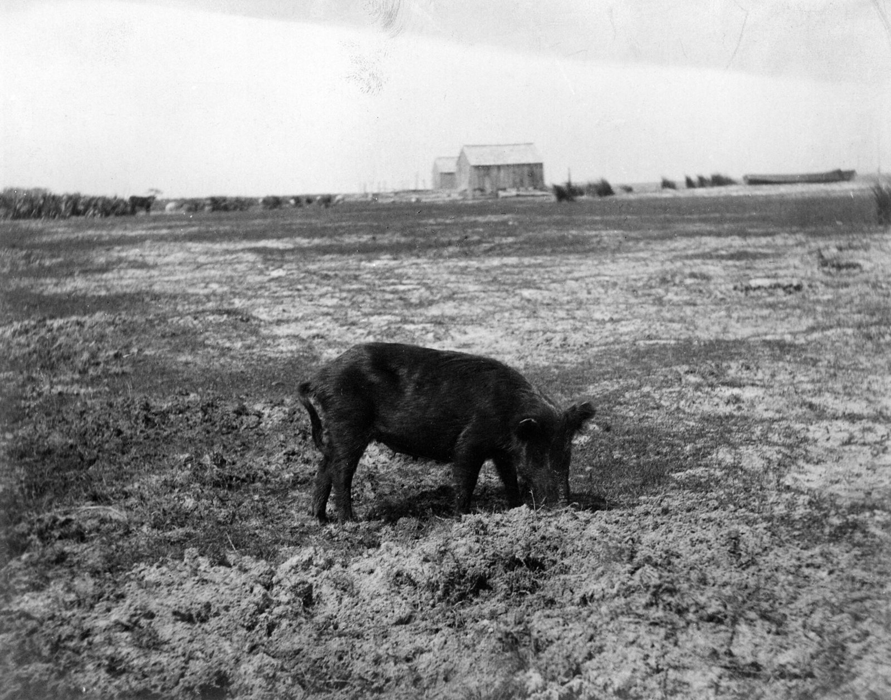
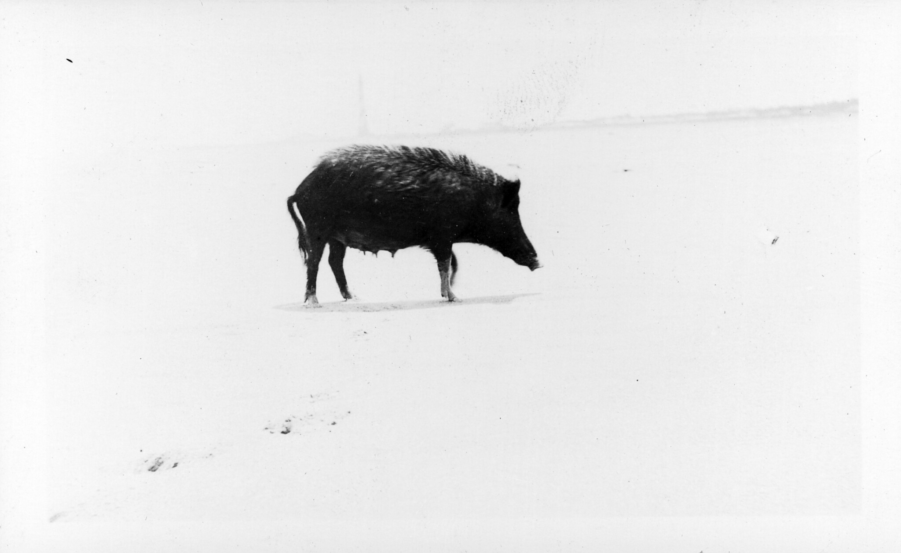

a wordhog
also: whole hog · hogg
A Carolina pit cooks a hog, not a pig — 'we cook whole hog', 'a hundred-and-twenty-pound hog' — and gives its size in dressed weight, the carcass with the innards out.

In Carolina barbecue speech the animal is a hog. Whole hog is the eastern North Carolina and Pee Dee style; a hog killing is the winter work of the farm; a hog's size is its dressed weight. American dictionaries make a hog a domesticated swine of 120 pounds or more raised for market and a pig the younger, smaller animal; the pit's small hogs of 80 to 120 pounds dressed sit at the bottom of that range. The pig pickin' hog is a barrow, a castrated male, or a gilt, a young female — boars and sows are too big.
First seen. before 1100 (dictionary.com); hogaster late 12c., hogge mid-14c. (etymonline); 'go the whole hog' 1828, American English (etymonline)
Whole hog, 1828, is explained two ways in the Online Etymology Dictionary: the butcher's offer of the whole slaughtered animal at a discount rather than the choice bits, or — the entry leans this way — an allegory, in English from 1779 and in a poem by Cowper, of Muslim sophists who argued away the ban on pork one part at a time until the whole hog was exempt. Wiktionary's derivation from Old Norse hǫggva 'to cut', making the hog 'the cut one', is not in the Online Etymology Dictionary and is given here as folk. Cited · etymonline
The story Cited · etymonline
Hog is older than pig for the grown animal. Old English hogg meant a swine of a certain age — a castrated male, or one reared for slaughter at about a year; pig, until the fourteenth century, meant a young one. Dressed weight is the pit's unit: the weight after the organs, head and inedible parts are removed, about 72 per cent of live weight for a pig by Wikipedia's example. A pig pickin' hog is 80 to 120 pounds dressed; elsewhere hogs run to 300 pounds, but in the Carolinas small hogs cooked hot so the skin crisps and can be chopped in. Hog killing was the farm's winter work: NCpedia describes it beginning on the first frigid day of autumn or winter, neighbours gathering before dawn, as many as 100 hogs penned and fattened on gleaned peas, potatoes and corn, and the weeks after full of spare ribs, liver and sausage, the hams a month or two later. Tradition holds — the barbecue was what a hog killing or a church homecoming did with fresh meat before curing. 'Go the whole hog', American English of 1828, is the same animal as a figure of speech.
Facts
| part of speech | noun |
|---|---|
| region | The Carolinas, The American South |
| links | hog — Online Etymology Dictionary · Dressed weight — Wikipedia · NCpedia — Hog Killing |
| confidence | high · updated 2026-09-15 |
Not to be confused with
- whole hog — 'Hog' is the animal; 'whole hog' is the cut and the style. The pig-or-hog tell is size: a hog is the market-weight animal, a pig the young one; the pit's hog is small, 80 to 120 pounds dressed.
Its kin
Who points back
Pictures

Sources
- Online Etymology Dictionary · link
- hog — Dictionary.com · link
- hog — Wiktionary · link
- Dressed weight — Wikipedia · link
- Pig pickin' — Wikipedia · link
- Whole hog barbecue — Wikipedia · link
- NCpedia — Hog Killing (William S. Powell, Encyclopedia of North Carolina, 2006) · link
- Barbecue in South Carolina — Wikipedia · link
- Hash (stew) — Wikipedia · link
- Flickr Commons · link
- State Archives of North Carolina on Flickr Commons · link
- H. H. Brimley Collection, PhC.42 — H. H. Brimley · link
Where it came from: Cited a source we name · Harvested pulled from an open dataset · Tradition what the tradition says, hedged · Inference this project's reasoning · Field somebody stood there. This record as JSON.